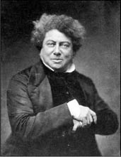

Alexandre Dumas
Alexandre Dumas (1802-1870)
“Hepimiz birimiz, birimiz hepimiz için.” (Üç Silahşörler)
19. yüzyıl Fransız edebiyatının ünlü ismi Alexandre Dumas Pere, aralarında dünya klasiklerinin de bulunduğu üç yüzden fazla eser yazarak döneminin en çok üreten yazarı olmuştur.
Üç Silahşörler ve Monte Cristo Kontu; üzerine defalarca film yapılan kitaplarındandır.
1870’de Paris kentinde ölmeden önce, hasta yatağında yatarken yanında bulunanlara merakla sorar:
“Lütfen biriniz şu cebime bakar mısınız, kaç para var?”
Orada bulunanlardan biri ünlü yazarın cebine bakarak “40 frank” diye cevap verir.
Alexandre Dumas, dudağında hafif bir tebessümle şu açıklamayı yapar: “Demek ki kırk yıl bedava yaşamışım; Paris’e geldiğim ilk gün de cebimde bu kadar para vardı!”
Oyunlar yazarak başladığı yazarlık hayatında tarihsel macera romanlarıyla ünlendi. Tefrikalar hâlinde gazetelerde yayımlanan eserleri daha sonra kitaplaştırılıyordu.
Bir gün Aleksandre Dumas’yı ziyarete gelen bir şair, birkaç şiirini okuduktan sonra “Nasıl? Kafiyelerim zengin değil mi?” diye sorar.
Dumas açık sözlerle misafirinin sorusunu yanıtlar: “Şiirleriniz hoş, fakat kafiyeler söylediğiniz gibi zengin değil.”
Ardından misafirinin alındığını gören Dumas sözlerine şöyle devam eder:
“Hemen kızmayın canım, zengin değil ama hâlleri vakitleri yerinde diyebiliriz.”
Kendisiyle aynı adı taşıyan ve aynı mesleği yapan oğlu Alexandre Dumas Fils’in Kamelyalı Kadın (La dame aux Camelias) adlı tiyatro eseri günümüzde bile sahnelenmektedir.
Eserin ilk sahnelendiği gece Alexandre Dumas Pere, oğlu Alexandre Dumas Fils’in oyununu izlemek için merakla izleyiciler arasında yerini alır. Oyunun sonunda izleyicilerden biri eseri Alexandre Dumas Pere’nin yazdığını zannederek “Üstat yine harikaydınız, eserinizle gurur duyuyor olmalısınız” der.
Alexandre Dumas Pere keyifle sahneye bakarak “Bu benim eserim değil, ama haklılık payınız var, eserimin eseri!” der.
Eleştirmenlerden biri yazar Alexandre Dumas Fils’e şunu sorar: “Üstadım yazdığınız eser güzel olmasına güzel ama içinde çok fazla anlaşılamayan tasvirler var. Mesela, ‘boşlukta duyulan ızdırap’ nedir bir türlü anlayamadım?” 154
Alexandre Dumas Fils, sevmediği ve boş kafalı diye nitelendirdiği eleştirmene şöyle cevap verir: “Yapmayın dostum! Siz hiç baş ağrısı çekmediniz mi?”
Alexandre Dumas Pere, Monte Cristo Kontu adlı etkileyici romanında, bir iftira sonucu zindana düşen roman kahramanı Edmond Dantes’in on dört yıllık mahkûmiyet hayatının ardından akılcı bir yöntemle kaçışını ve kendisine komplo kuranlarla hesaplaşarak mutlu sona ulaşmasını anlatır.
Kitabın son satırları şu ibret verici cümlelerle biter:
”Tanrı’nın insanlara bahşettiği saadeti şu iki kelimede arayınız: Ümit etmek ve sabırla beklemek... “

Alexandre Dumas Pere, Fotoğrafçı Gaspard-Felix Tournachon, 1855